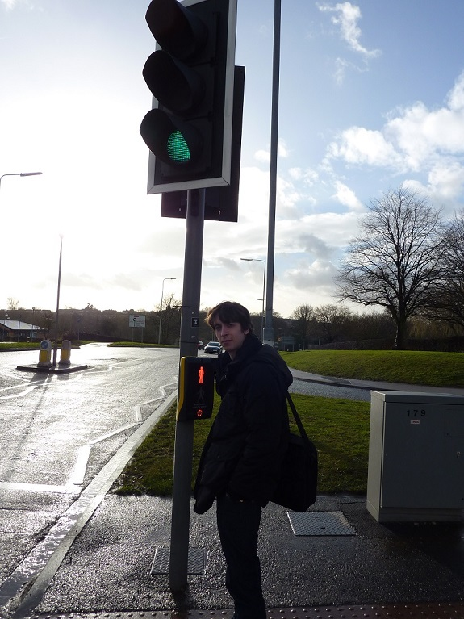

Les situations surprenantes
Les horaires des magasins
Si vous souhaitez faire un tour dans la ville pour aller à la découverte des magasins vous devez faire bien attention à l'heure!! Tous les magasins ferment vers 17h30-18h00. Ainsi prévoyez de partir assez tôt de chez vous car sinon la ville sera morte.
Il existe tout de même un super marché nommé ASDA ouvert 24h/24 du lundi matin à 7h jusqu'à samedi soir à 22h! Ceci est vraiment très intéressant: ces horaires nous permettent de profiter de la ville jusque tard le soir puis de faire nos courses sans se soucier de l'heure.
Les voitures roulent à gauche
Tous le monde sait que les anglais ne roulent pas du même coté que les français mais ça surprend toujours!
Les feux rouges et passages pour piètons
Ce qui est très surprenant quand on arrive en Angleterre c'est l'organisation de la circulation automobile dans la ville. En effet, si vous observez les feux rouges pour voiture vous remarquerez qu'ils passent du rouge à l'orange puis au vert (ils ne passent pas directement au vert). Ceci peut être assez perturbant car si vous arrivez et que vous voyez le feux orange vous ne savez pas si le feux va passer au rouge ou au vert! Faites donc bien attention!
Les horaires des boîtes
Si vous souhaitez vous amuser avec vos amis et qu'il y ait de l'ambiance nous vous conseillons de choisir comme jour le samedi soir (sinon la ville est morte) et faîtes attention aux horaires: ce n'est pas comme sur Paris où vous pouvez rester jusqu'à 6h/7h du mat' dans la boîte!
En effet, vous devrez partir vers 1h/2h du matin...
En ce qui concerne l'heure où il faut arriver c'est majoritairement avant 23h pour que l'entrée soit gratuite. Donc ne tardez pas trop!